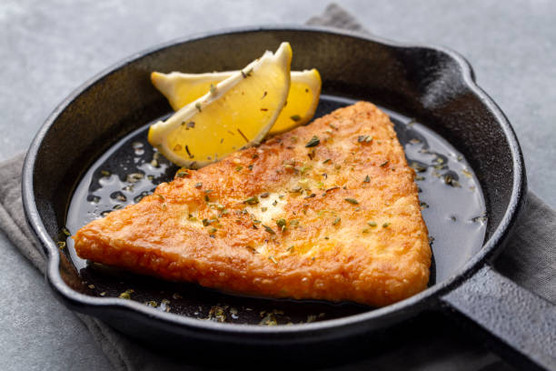

Saganaki

Description
Saganaki is a showstopper at many Greek restaurants, where it often arrives
at your table still sizzling in the skillet. The next step is rather dramatic,
as the server proceeds to light it on fire, with the help of ouzo, just before serving.
This last step in its presentation is what gives it the name “flaming Greek saganaki.”
In this saganaki recipe, the table side show is totally optional but surprisingly easy to accomplish!
I know this festive dish—the savory version of our beloved feta, honey, and sesame saganaki—will
quickly become the top request at your dinner parties. If you love melted Greek cheese as much as
I do, you may want to try them both!
Ingredients
- Cheese
- Oil
- Ground black pepper
- Flour
- Lemon
- Spirit (optional)
Steps
- Prepare the cheese. Slice a (cold) 8-ounce block of cheese into two 1/2-inch wide pieces.
Briefly run it under room temperature water and pat dry.
- Coat the cheese in flour. Spread all purpose flour onto a rimmed plate and season with black
pepper. Dredge each half in the flour and pepper mixture,
shaking off any excess.
- Pan-fry the cheese. Add 1/4 cup of olive oil to a medium nonstick skillet. Set over medium heat.
When the oil is hot (but not smoking), pan-sear the
cheese slices until they’re golden brown and bubbling
on both sides, about 2 minutes per side. The cheese should form a nice thin crust with a soft, melty interior.
- Serve: Squeeze on some lemon juice and serve the fried Greek cheese immediately. Or, flambé the cheese with the
help of brandy or ouzo (see instructions below).